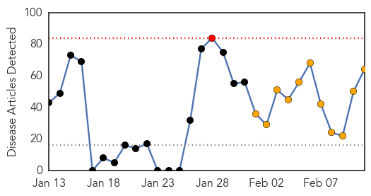
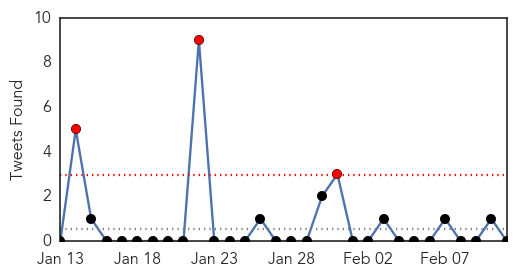
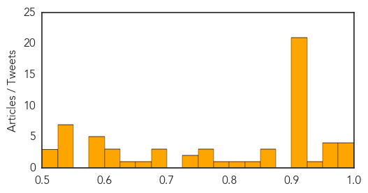
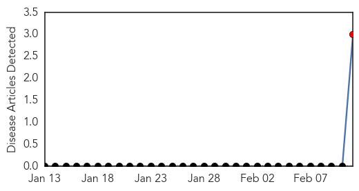
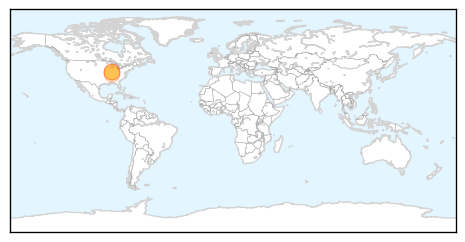

Unknown
30-Day Web Trend
1 alerts, 11 warnings

30-Day Twitter Trend
2 alerts, 0 warnings

Article Locations
Article Confidences
Top Articles:
- 0.989
- Patients Exposed to Serious Brain Disease
- 0.987
- Hospital to 18 people: You may have been exposed to Creutzfeldt-Jakob
- 0.986
- 18 may have been exposed to incurable disease
- 0.979
- Brain surgery patients exposed to fatal disease at hospital in North Carolina, happens more often than you might think
- 0.964
- Boston catches flu season break... so far
- 0.960
- Doctors apologize for possibly exposing NC patients to deadly, incurable disease
- 0.958
- 18 North Carolina hospital patients potentially exposed to rare brain disease
- 0.952
- Hospital to 18 patients: You may have been exposed to incurable disease
- 0.933
- Health District reports 14 people test positive for tuberculosis at Coronado High School
- 0.917
- Chicago Tribune
- 0.917
- Chicago Tribune
- 0.917
- Chicago Tribune
- 0.917
- Chicago Tribune
- 0.917
- Chicago Tribune
- 0.917
- Chicago Tribune
- 0.917
- Chicago Tribune
- 0.917
- Chicago Tribune
- 0.917
- Chicago Tribune
- 0.917
- Chicago Tribune
- 0.917
- Chicago Tribune
- 0.917
- Chicago Tribune
- 0.917
- Chicago Tribune
- 0.917
- Chicago Tribune
- 0.917
- Chicago Tribune
- 0.917
- Chicago Tribune
- 0.917
- Chicago Tribune
- 0.917
- Chicago Tribune
- 0.917
- Chicago Tribune
- 0.910
- St. Thomas Times-Journal
- 0.910
- The world windows to Thailand
- 0.873
- Hospital Apologizes For Possible Exposure To Brain Disorder
- 0.866
- Obama says U.S., France agree on continued enforcement of Iran sanctions
- 0.854
- 18 surgery patients in NC may be exposed to Creutzfeldt-Jakob disease
- 0.829
- North Carolina doctors may have exposed 18 patients to deadly, incurable brain disease — RT USA
- 0.806
- N.C. Hospital: 18 patients may have been exposed to brain infection
- 0.797
- Wisconsin state veterinarian bans spring fair pig weigh-ins
- 0.773
- Number of confirmed H7N9 ...｜Society｜WCT
- 0.755
- KRNV, Reno, NV
- 0.755
- KRNV, Reno, NV
- 0.739
- SGGP English Edition- Vietnam alert for bird flu transmission
- 0.733
- Novant Health enhances cleaning procedures after 18 exposed to Creutzfeldt-Jakob disease
- 0.690
- Manchester vets tell dog owners 'don't panic' as death toll from incurable Alabama rot disease rises
- 0.684
- WHO praise Bangladesh’s e-health service
- 0.676
- St. Bernard water system clear of brain-eating amoeba
- 0.665
- Doctor says patients died as shortage of doctors led to longer waiting times
- 0.642
- US Hospital Says Sorry after Exposing 18 Patients to Deadly 'Mad Cow' Disease
- 0.620
- China reports one more H7N9 case, one death
- 0.616
- Cebu News, The Freeman Sections, The Freeman
- 0.602
- The Voice of Russia: News, Breaking news, Politics, Economics, Business, Russia, International current events, Expert opinion, podcasts, Video
- 0.599
- Royal Victoria Hospital: Delays 'contributed to five deaths'
Showing top 50 articles...
Top Tweets:
-
No tweets found for Feb 11, 2014
Mumps
30-Day Web Trend
30 alerts, 0 warnings

30-Day Twitter Trend
0 alerts, 0 warnings

Article Locations
Article Confidences

Top Articles:
Top Tweets:
-
No tweets found for Feb 11, 2014